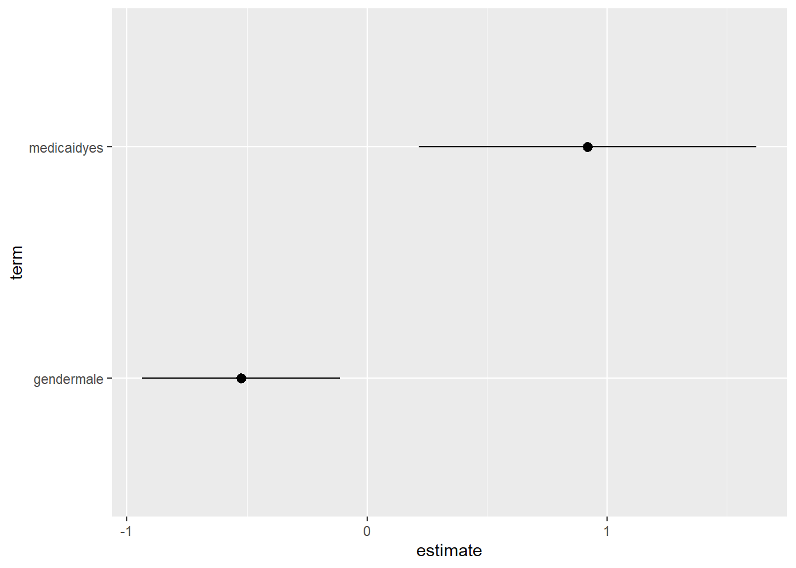

Chapter 6 パラメータの推定
- ここでは（条件付き）平均差を、線形モデルを仮定し、信頼区間こみで推定する。
6.1 OLS:lm_robust (estimatr)
- robust standard errorを計算するためにestimatrパッケージ(Blair et al. 2021)を利用
library(estimatr)- 条件なし平均差\(\tau=E[Y|D=d']-E[Y|D=d]\)を推定するために、
\[E[Y|D=d]=\beta_0 + \tau\times D\]
を仮定し推定
\(D\)が2値変数であればノンパラメトリックな推定
それ以外の場合は線形近似モデルを推定
lm_robust(visits ~ medicaid,
data = raw)## Estimate Std. Error t value Pr(>|t|) CI Lower CI Upper DF
## (Intercept) 5.68007 0.1065151 53.326444 0.000000000 5.4712468 5.888893 4404
## medicaidyes 1.03386 0.3595968 2.875054 0.004058953 0.3288698 1.738851 4404- 条件付き平均差\(\tau=E[Y|D=d', X_1,...,X_L]-E[Y|D=d,X_1,...,X_L]\)を推定するために、
\[E[Y|D=d,X_1,...,X_L]=\beta_0 + \tau\times D + \beta_1 X_1+...+\beta_L X_L\]
を仮定し推定
lm_robust(visits ~ medicaid + age + gender,
data = raw)## Estimate Std. Error t value Pr(>|t|) CI Lower
## (Intercept) 6.09459718 1.1362142 5.3639507 8.559768e-08 3.8670457
## medicaidyes 0.92367669 0.3616363 2.5541590 1.067785e-02 0.2146876
## age -0.02596731 0.1513204 -0.1716048 8.637561e-01 -0.3226315
## gendermale -0.52597827 0.2095122 -2.5104898 1.209196e-02 -0.9367276
## CI Upper DF
## (Intercept) 8.3221486 4402
## medicaidyes 1.6326658 4402
## age 0.2706969 4402
## gendermale -0.1152289 4402発展
- tidy関数により推定結果data.frameに変化することで、kable関数(knitrパッケージ)による推計結果表の整形、geom_pointrange関数による可視化が可能
推計結果表
- 点推定値(estimate)、標準誤差(std.error)のみを残した推計結果表
library(knitr)
fit <- lm_robust(visits ~ medicaid + gender,
data = raw)
fit <- tidy(fit)
fit <- select(fit, term, estimate, std.error)
kable(fit, digits = 2)| term | estimate | std.error |
|---|---|---|
| (Intercept) | 5.90 | 0.13 |
| medicaidyes | 0.92 | 0.36 |
| gendermale | -0.52 | 0.21 |
Dot-and-Whisker plotによる可視化
- Dot-and-Whisker図により点推定量と信頼区間を可視化
fit <- lm_robust(visits ~ medicaid + gender,
data = raw)
fit <- tidy(fit)
fit <- filter(fit,
term != "(Intercept)")
ggplot(fit, aes(y = term,
x = estimate,
xmin = conf.low,
xmax = conf.high)) +
geom_pointrange()